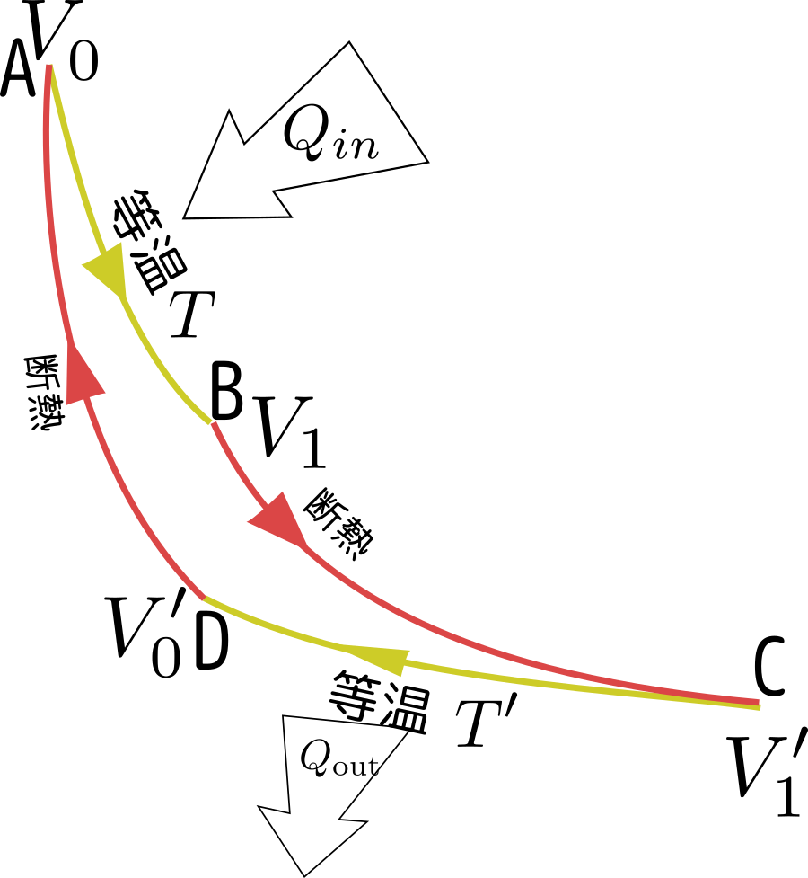
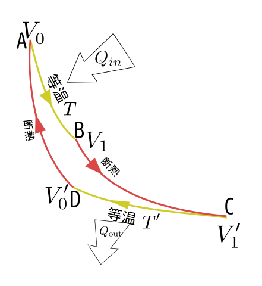
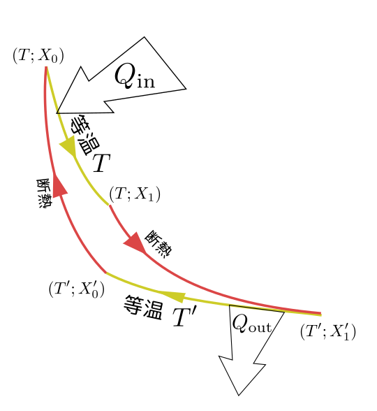
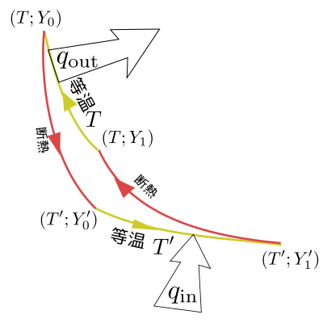
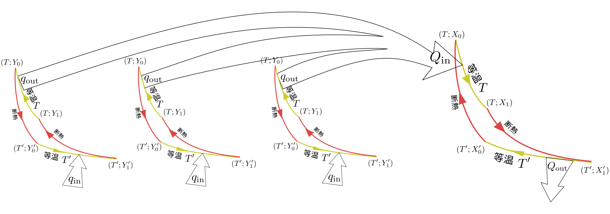
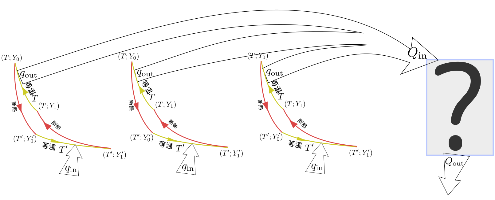
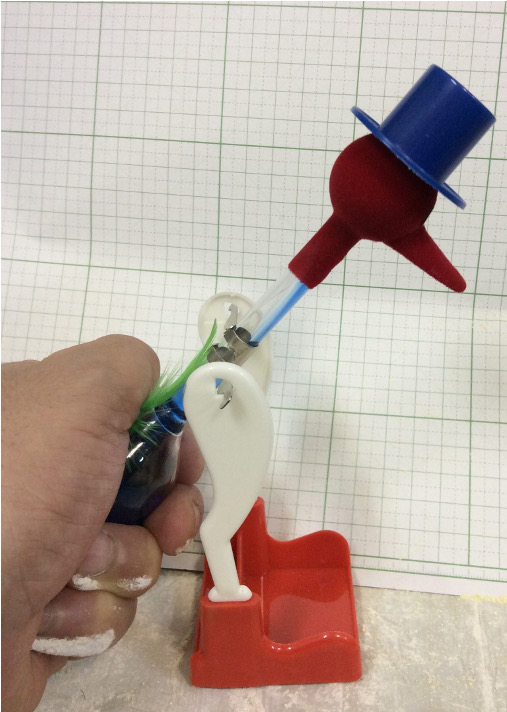

等温操作と断熱操作を組み合わせて以下のような運動をさせる（アニメーションが次のページにある）。

図のA→Bは等温操作で、温度を$T$に保ちつつ、体積を$V_0$→$V_1$と膨張させる。
図のB→Cは断熱操作で、周りとの接触を断って体積を$V_1$→$V'_1$と膨張させる（このあいだに、温度は$T$→$T'$に変化する）。
図のC→Dは等温操作で、温度を$T'$に保ちつつ、体積を$V'_1$→$V'_0$と収縮させる。
図のD→Aは断熱操作で、周りとの接触を断って体積を$V'_0$→$V_0$と収縮させる（このあいだに、温度は$T'$→$T$に変化する）。
これは何をやりたいかというと、一周して元の状態に戻す間にこの気体に仕事をさせたい。図のように動くと、膨張しているときは収縮しているときに比べて圧力が高いから、全体としてプラスの仕事をしていることになる。エネルギー収支の式$\Delta U=Q-W$を考えると、一周回って元に戻るから$\Delta U=0$となり、このとき$Q=W$である。
断熱操作では熱の出入りがない。図で温度$T$の等温操作（A→B）で入ってくる熱を$Q_{\rm in}$、温度$T'$の等温操作（C→D）で出ていく熱を$Q_{\rm out}$とすると、全体で熱は$Q_{\rm in}-Q_{\rm out}$入ってきたことになり、これが仕事になるから、$Q_{\rm in}-Q_{\rm out}=W$である。ガソリンで動く車のエンジンであれば、$Q_{\rm in}$はガソリンによって生まれる熱量であり、それを（車のラジエータなど）で冷やす過程がC→Dである。
温度計→（低温）（高温）
●の温度：
●の温度：
カルノーサイクルの効率＝
●の温度での吸熱量Q1= ●の温度放熱量Q2= 仕事量W=
物質量Nと気体定数Rは1にして計算してある。
二つの温度は変更できるし、図の赤と青の●はドラッグして動かせるので、サイクルの行程を変化させていろいろ試してみて欲しい。
ただし、温度は4から25の範囲までしか変化しないし、●の温度は●の温度より高くないといけない。
なお、仕事がマイナスになるのは、サイクルが時計回りではなく反時計回りになったとき。そのときは、膨張するときの方が圧力が低くなっている。
カルノーはこのサイクルをガソリンエンジンのような内燃機関のモデルと考えた。すると$Q_{\rm in}$は言わば「投入する燃料」である。

同じだけの燃料を使う（同じ$Q_{\rm in}$で考える）ならサイクルがする仕事は大きい方がよく、それは$Q_{\rm out}$が小さい方がいい、ということである。$Q_{\rm out}$はどうやったら小さくできるか、と考えているうちにカルノーはもっとも効率がいい場合であっても、
${Q_{\rm out}\over Q_{\rm in}}={T'\over T}$
であること（カルノーの定理）を見つけてしまった。$T>T'$で$T'$は常に正（$PV=NRT$で温度が表現されていることを考えると、これは0にも負にもなりようがない）であるから、$Q_{\rm out}$を0にすることはできない。
この定理は一般的に証明できる（つまり、物体が何かにも依らない）。実は理想気体でなくたっていい。とりあえず理想気体と考えてこの量を計算して、実際に${T'\over T}$になることを示そう。
理想気体の場合、温度$T$で等温準静的に体積が$V_0\to V_1$と変化した時の吸収する熱が$NRT\log\left({V_1\over V_0}\right)$だというのはすでに計算してあるので、今の場合に当てはめると$Q_{\rm in}=NRT\log\left({V_1\over V_0}\right)$である。同様に考えると$Q_{\rm out}=NRT'\log\left({V'_1\over V'_0}\right)$となる。
実はこの${Q_{\rm out}\over Q_{\rm in}}$は系がどのような物質でできているかによらず同じ値を取ることが証明される（これがCarnotの定理）ので、どのような物質でできた系においても、${Q_{\rm out}\over Q_{\rm in}}={T'\over T}$となる。これを変形した${Q_{\rm out}\over T'}={Q_{\rm in}\over T}$という式は次の章で定義するエントロピーという量と関係していいて、とても重要。
この証明には、
ケルビンの原理
等温操作で$(T,X)$から$(T,X)$に戻る操作をしたとき、その系のする仕事を$W_{\rm cyc}$とすると、$W_{\rm cyc}\leq0$である。を使う。カルノーサイクルはそのままでは二つの温度（$T,T'$）の熱源と相互作用するサイクルだから、ケルビンの原理の適用範囲外である。そこで、ある意味二つの熱源のうち１つの効果を打ち消すようなことを行う以下の証明は少し雑である。気になる人は「熱力学―現代的な視点から」への補足を読むこと。。
もう一度カルノーサイクルの図を見よう。

ここで吸収、放出されている熱は教科書では
$Q_{\rm in}=Q(T;X_0\to X_1)$
$Q_{\rm out}=Q(T';X'_0\to X'_1)$
と書かれている$Q_{\rm out}$の方、図で起こる変化は$X'_1\to X'_0$なのに式では$X'_0\to X'_1$となっていて「逆では？」と思うかもしれないが、この$Q(T';X'_0\to X'_1)$の定義は状態$X'_0$から状態$X'_1$に行くときに吸収する熱量で、$Q_{\rm out}$は放出する熱量という定義なので、二回符号がひっくり返ってこれでよい。。
もう１つ、逆向きに操作する（元のカルノーサイクルが時計回りなのに対して反時計回りである）「逆カルノーサイクル」を動かそう。

こちらは吸収、放出する熱は
$q_{\rm in}=Q(T';Y'_0\to Y'_1)$
$q_{\rm out}=Q(T;Y_0\to Y_1)$
となる（逆回転なのでinとoutの位置が違う。また示量変数は$X$ではなく$Y$で表現している）。
ここでカルノーサイクルが吸収する熱$Q_{\rm in}$と逆カルノーサイクルが放出する熱$q_{\rm out}$が$\alpha$倍違っていたとする（すなわち、$Q_{\rm in}=\alpha q_{\rm out}$）。
ここで逆カルノーサイクルを$\alpha$個用意しよう。たとえば$\alpha=3$だとしたら３つのカルノーサイクルを

のように組み合わせ、カルノーサイクルが吸収する熱が逆カルノーサイクル３つが放出する熱と釣り合うようにする。
このカルノーサイクルの組み合わせが吸収した熱は
$\alpha q_{\rm in}-Q_{\rm out}=\alpha Q(T';Y'_0\to Y'_1)-Q(T';X'_0\to X'_1)$
で、この熱のやりとりは温度$T'$の環境とのみ行われる。
サイクル運動だから、この式はサイクルのする仕事$W_{\rm cyc}$に等しい。ところがケルビンの原理によりその仕事は0以下であるから、
$\alpha Q(T';Y'_0\to Y'_1)\leq Q(T';X'_0\to X'_1)$
が言える。
一方、すべてのサイクルを逆回転させると以上の計算のすべてが逆になるから、
$\alpha Q(T';Y'_0\to Y'_1)\geq Q(T';X'_0\to X'_1)$
も言える。結局、
$\alpha Q(T';Y'_0\to Y'_1)=Q(T';X'_0\to X'_1)$
であり、$\alpha$の定義を思い出せば、
${Q_{\rm in}\over q_{\rm out}}\times Q(T';Y'_0\to Y'_1)=Q(T';X'_0\to X'_1)$
すなわち、
${Q(T;X_0\to X_1)\over Q(T';X'_0\to X'_1)}={Q(T;Y_0\to Y_1)\over Q(T';Y'_0\to Y'_1)}$
となって、最大吸熱の比は系が変わっても変わらないことになる。そして、理想気体ではこれが${T'\over T}$であることはすでに見たから、$ {Q(T;X_0\to X_1)\over Q(T';X'_0\to X'_1)}={T'\over T}$が全ての系に対して言える。
カルノーサイクル以外のサイクル（以下「謎のサイクル」）の場合でも同様の議論を繰り返して、

のように考えて同様に、
$\alpha q_{\rm in}\leq Q_{\rm out}$
が言える。「謎のサイクル」は逆操作ができるとは限らないから、$\alpha q_{\rm in}\geq Q_{\rm out}$の方は出ない。このことから「謎のサイクル」の吸熱比は等号にならず、
${Q_{\rm out}\over Q_{\rm in}}\geq {Q(T;Y_0\to Y_1)\over Q(T';Y'_0\to Y'_1)}={T'\over T}$
となる。よって「謎のサイクル」の吸熱比は、カルノーサイクルより大きくなる（つまり、熱機関の効率はカルノーサイクルより悪くなる）。
「謎のサイクル」が「ケルビンの原理」を満たさないような「謎の物質」でできていればこうはならないが、ケルビンの原理を破るような系は見つかってない。誰がが「ぼくの作った最強のサイクル」を持ってきたとしても、ケルビンの原理に反するサイクルを持ってきてない限り、そのサイクルはカルノーサイクルに負ける。
u以上から、
${Q_{\rm out}\over Q_{\rm in}}={NRT'\log\left({V'_1\over V'_0}\right)\over NRT\log\left({V_1\over V_0}\right) }={T'\over T}$
となる。
$\log\left({V'_1\over V'_0}\right)$と$\log\left({V_1\over V_0}\right)$が消えるのは、断熱過程の条件（$T^c V=$一定）から、比${V'_1\over V'_0}$と比${V_1\over V_0}$が等しいことが示せるから。
理想的なエンジンは、与えられる熱をすべて仕事にできる（つまり、$Q_{\rm out}=0$）ものだが、それは$T'=0$でないと有り得ない（しかし、$T'$は0にも、負にもならない）。
こうして「効率のエンジンを作ろう」としても「投入した熱の${T'\over T}$倍の部分は常に無駄になる、ということになる。
なお、じゃあ$T'=0$にしよう」というのはダメ。$T'$は摂氏や華氏ではなく、ケルビンで測定する絶対温度である。0Kは達成できない。
カルノーの定理からわかることは「サイクルに仕事をさせるのに大事なのは温度差である」ということ。そこで水飲み鳥（平和鳥）にもう一度登場してもらう。
平和鳥が動くのは「濡れたくちばしの温度が下がるから」だった。温度差が大事なので、くちばしを冷やすのではなく胴体部を温めても、この鳥は動く。具体的には

のようにして体温で胴体部を温めると、ちゃんと鳥はお辞儀をするのである。